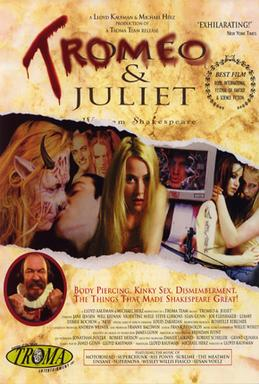
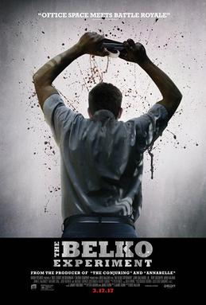
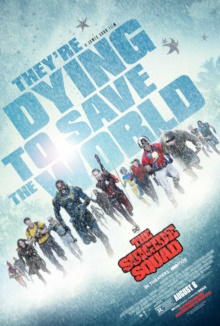

About J. Gunn
_(1).jpg)
| Year | Title (+IMDB link) | Poster | Involvement |
|---|---|---|---|
| 1996 | Tromeo and Juliet |  |
Executive in charge of production, co-writer with Lloyd Kaufman |
| 2000 | The Specials |

|
Production (associated) |
| 2002 | Scooby-Doo |

|
Story co-written with Craig Titley |
| 2004 | Dawn of the Dead |

|
Writer |
| Scooby-Doo 2: Monsters Unleashed |

|
Writer, co-production with Charles Roven and Richard Suckle |
|
| 2006 | Slither | Director, writer | |
| 2010 | Super |

|
Director, writer |
| 2014 | Guardians of the Galaxy |
_poster.jpg)
|
Director, co-written with Nicole Perlman |
| 2016 | The Belko Experiment |  | Writer, producer |
| 2017 | Guardians of the Galaxy Vol. 2 |

|
Director, writer |
| 2019 | Brightburn |

|
Producer |
| 2021 | The Suicide Squad |  | Director, writer |
| 2023 | Guardians of the Galaxy Vol. 3 |

|
Director, writer |
| 2025 | Superman |
_poster.jpg)
|
Director, writer, producer |